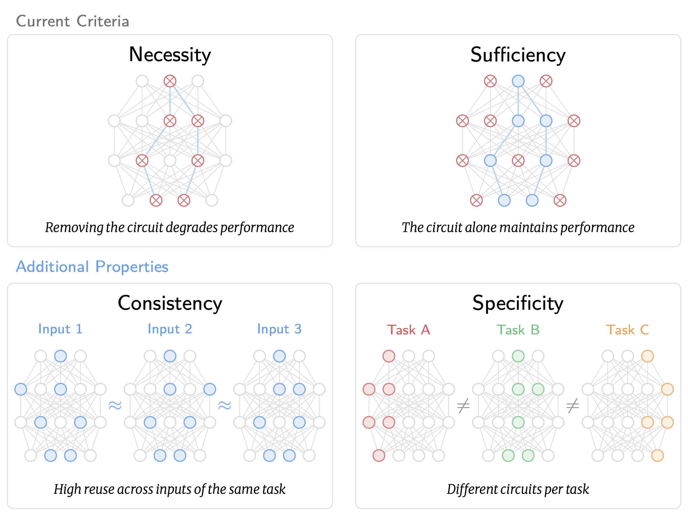
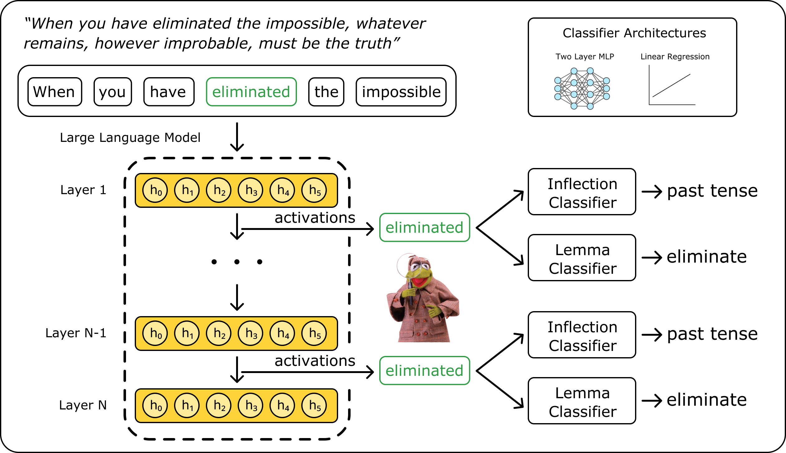
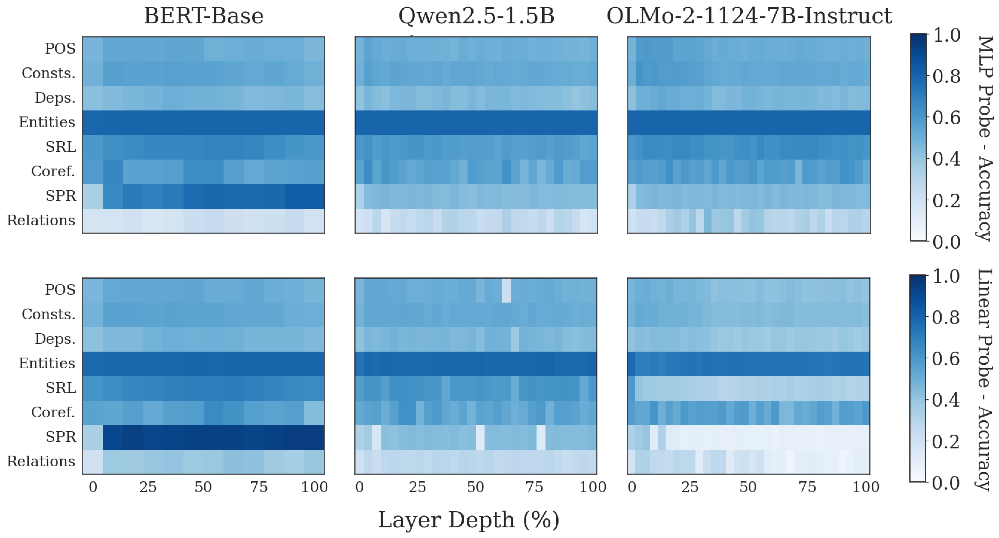

Michael Li
email · google scholar · github · CV
I'm a first-year PhD student in CS at Northeastern University, advised by David Bau and Byron Wallace. I previously studied statistics and machine learning at Carnegie Mellon University.
I'm interested in developing our scientific understanding of neural networks, mostly by studying the underlying mechanisms and representations they learn. More broadly, I'm excited by foundational questions about learning, generalization, and representation in deep neural networks.
News
How Much Do Circuits Tell Us? was accepted as an oral to the Sci-FM workshop at COLM 2026.
Joining Northeastern University as a CS PhD student in Fall 2026!
How Much Do Circuits Tell Us? won a best paper award (preliminary track) at the LTI Student Research Symposium.
Model Internal Sleuthing was accepted to ACL 2026 (Main).
Presented BERTology in the Modern World at the Interplay workshop at COLM 2025.
Publications


